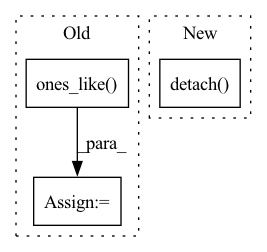

Pattern ID :14696
Before Change
def act(self, input):
mu = self.forward(input)
sigma = torch.ones_like( mu)
dist = Normal(mu, sigma)
action = dist.sample().detach().item()
return action
After Change
return x
def act(self, input):
action = self.forward(input).detach() .item()
return action
In pattern: SUPERPATTERN
Frequency: 4
Non-data size: 3
Instances Fragment ID: 48460359
Project Name: deligentfool/policy_based_rl
Commit Name: b5bb911692dd343e7e89afce2c0a5b49c27e14f2
Time: 2020-02-17
Author: 1027660817@qq.com
File Name: DDPG/ddpg.py
M Class Name: policy_net
N Class Name: policy_net
M Method Name: act(2)
N Method Name: act(2)
M Parent Class: nn.Module
N Parent Class: nn.Module
M File Name: DDPG/ddpg.py
N File Name: DDPG/ddpg.py
M Start Line: 48
M End Line: 51
N Start Line: 49
N End Line: 49
Before Change
scores = self.model(x)
y_true = y.cpu().numpy().flatten()
pred = torch.ones_like( scores)
pred[scores <= .5] = 0
y_pred = pred.cpu().numpy().flatten()
auc_scores = scores.detach().cpu().numpy().flatten()
After Change
}
if scores.shape[1] == 2:
auc_scores = scores[:, 1].detach() .cpu().numpy().flatten()
if len(set(y_true)) == 2:
res["auc"] = roc_auc_score(y_true, auc_scores).astype(float)
else: Fragment ID: 48460363
Project Name: makgyver/gossipy
Commit Name: 31a93a404f8bfba3869c5eb733962a438f4806f0
Time: 2021-08-29
Author: mak1788@gmail.com
File Name: gossipy/model/handler.py
M Class Name: TorchModelHandler
N Class Name: TorchModelHandler
M Method Name: evaluate(2)
N Method Name: evaluate(2)
M Parent Class: ModelHandler
N Parent Class: ModelHandler
M File Name: gossipy/model/handler.py
N File Name: gossipy/model/handler.py
M Start Line: 93
M End Line: 103
N Start Line: 99
N End Line: 123
Before Change
spk = self.spike_grad(mem_shift).to(device)
reset = torch.zeros_like(mem)
spk_idx = mem_shift >= 0
reset[spk_idx] = torch.ones_like( mem) [spk_idx]
return spk, reset
def fire_single(self, batch_size, mem):After Change
Returns spk and reset.
mem_shift = mem - self.threshold
spk = self.spike_grad(mem_shift).to(device)
reset = spk.clone().detach()
return spk, reset
def fire_inhibition(self, batch_size, mem):
Generates spike if mem > threshold. The neuron with the largest membrane will inhibit all others for a given time step. Fragment ID: 48460360
Project Name: jeshraghian/snntorch
Commit Name: 27c26c6b66548fdcc25b8b33641d3d17b5322fbc
Time: 2021-02-04
Author: 40262130+jeshraghian@users.noreply.github.com
File Name: snntorch/__init__.py
M Class Name: LIF
N Class Name: LIF
M Method Name: fire(2)
N Method Name: fire(2)
M Parent Class: nn.Module
N Parent Class: nn.Module
M File Name: snntorch/__init__.py
N File Name: snntorch/__init__.py
M Start Line: 32
M End Line: 36
N Start Line: 33
N End Line: 34
Before Change
def act(self, input):
mu = self.forward(input)
sigma = torch.ones_like( mu)
dist = Normal(mu, sigma)
action = dist.sample().detach().item()
return action
After Change
return x
def act(self, input):
action = self.forward(input).detach() .item()
return action
Fragment ID: 48460366
Project Name: deligentfool/policy_based_rl
Commit Name: b5bb911692dd343e7e89afce2c0a5b49c27e14f2
Time: 2020-02-17
Author: 1027660817@qq.com
File Name: TD3/td3.py
M Class Name: policy_net
N Class Name: policy_net
M Method Name: act(2)
N Method Name: act(2)
M Parent Class: nn.Module
N Parent Class: nn.Module
M File Name: TD3/td3.py
N File Name: TD3/td3.py
M Start Line: 49
M End Line: 52
N Start Line: 50
N End Line: 50